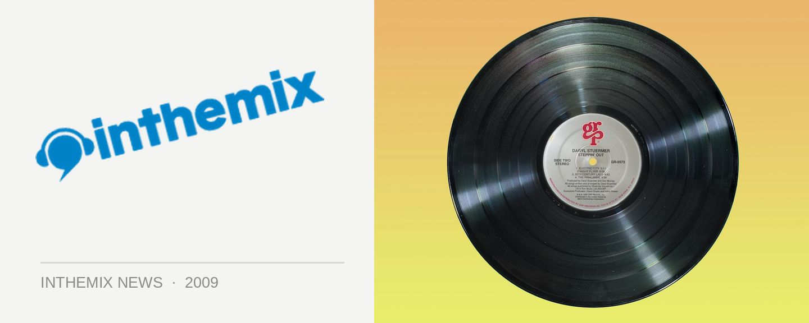

Lightsounds puts call out for unsigned producers
Digital technology specialists Lightsounds are currently compiling the second installment of their Circuit Breaker compilation series, and they’ve put the call out to underground producers who want to have a place on the new CD. The debut Circuit Breaker release from back in 2007 received hundreds of entries from all over Australia, and the final result received rave reviews form across the board. Now it’s time for the second installment…
If you’re interested in being a part of Circuit Breaker 2, put the finishing wraps on your original electro, tech, dub, rave, minimal, house and hip hop tracks and send them on CD to Circuit Breaker 2, P O Box 19, Canterbury, NSW 2193. Alternatively you can send them a link to download through megaupload.com in either .wav of .aiff format. You’ve got until August 31 to submit your entries.
Check out www.lightsounds.com for more details.